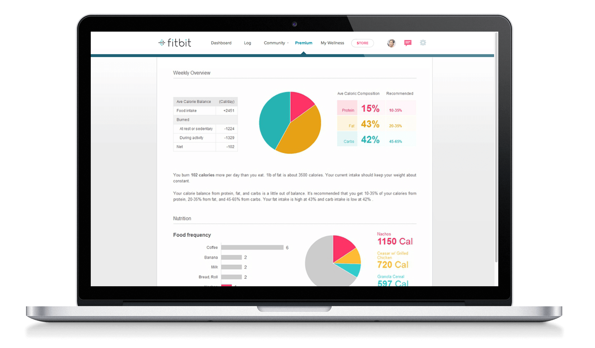
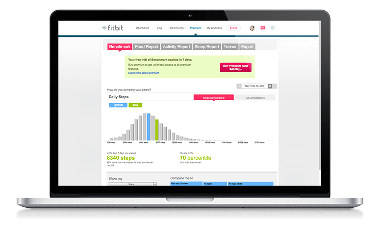
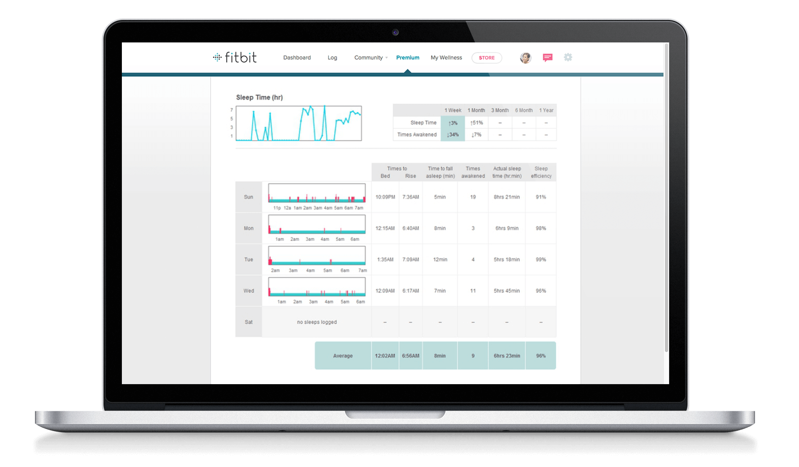
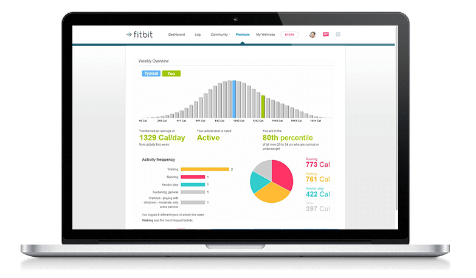
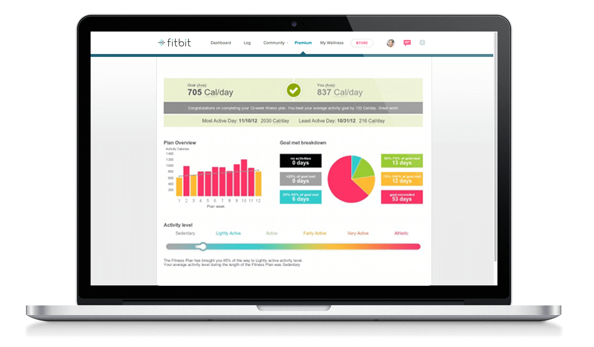

벤치마크
음식보고서
활동보고서
수면보고서
트레이너
사용자 데이터를 전체 fitbit 커뮤니티, 사용자 연령그룹 등과 비교합니다.

사용자 데이터를 전체 fitbit 커뮤니티, 사용자 연령그룹 등과 비교합니다.

사용자 데이터를 전체 fitbit 커뮤니티, 사용자 연령그룹 등과 비교합니다.

사용자 데이터를 전체 fitbit 커뮤니티, 사용자 연령그룹 등과 비교합니다.

사용자 데이터를 전체 fitbit 커뮤니티, 사용자 연령그룹 등과 비교합니다.
